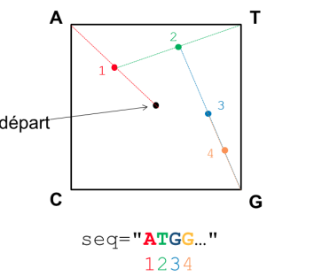
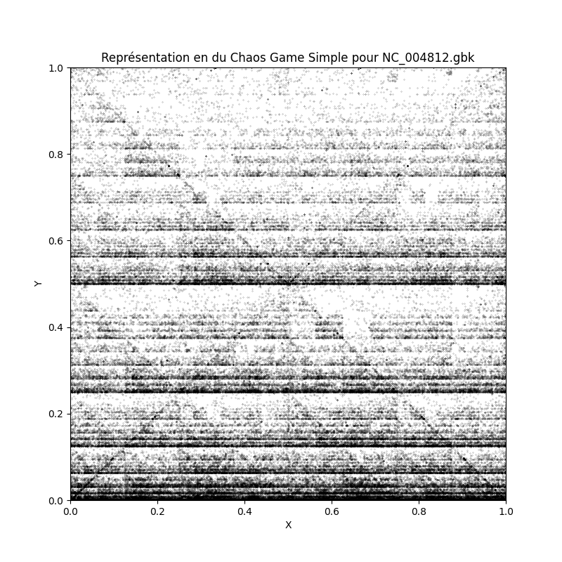
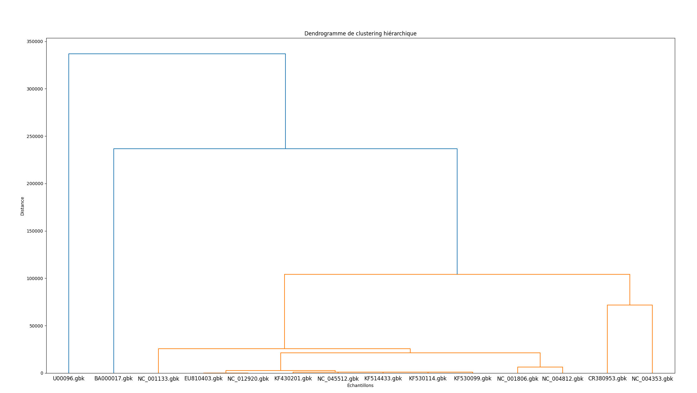

Mon Projet
Chaos Game
Le but du projet était de calculer et de representer des "signatures génomiques". Les signatures génomiques était représentées par des nuages de points tracés à l'aide de MathPlotLib. Les coordonnées était obtenues à partir des distances euclidiennes calculé en fonction du nucléotides lu dans la séquence. On avait donné une direction correspondante à chaque nucléotide et un point de référence placé en [0,0] se déplaçait à une demie-distance de la de la position du nucléotide. Nous stockions ces coordonnées sous forme de matrice et nous avons donc pu faire des comparaisons de matrice pour former des dendogrammes et voir s'il y avait un sens à nos signatures génomiques en comparant des souches similaires avec d'autres qui était totalement différentes
  